202605
Publication论文論文
Publish data assimilation paper on Journal of Hydrology
数据同化论文发表于《水文学报》（Journal of Hydrology）
データ同化論文が Journal of Hydrology に掲載
Application of real-time data assimilation system to improve streamflow forecasts in Japan
实时数据同化系统在日本径流预报改善中的应用
リアルタイムデータ同化システムによる日本の流量予測改善への応用
Data assimilation (DA) can improve hydrodynamic model performance by integrating real-time observations, yet its practical use at national scale remains limited. This study presents the first development of a real-time online DA system in Japan for a large-scale hydrodynamic model, assimilating hourly water surface elevation (WSE) observations from 1800 in-situ gauges across the country. The system employs the Local Ensemble Transform Kalman Filter (LETKF), which updates model states using only spatially relevant observations. This localization expands DA coverage from 10% to 58.4% by leveraging nearby gauges to correct conditions even at non-observed locations. System performance was evaluated across three major flood events in Japan and evaluated on WSE, river discharge, and inundation extent. For discharge, 65% of stations improved, with over 60% achieving a Kling-Gupta Efficiency (KGE) above 0.5, demonstrating benefits for non-assimilated variables as well. Forecasting skill was also enhanced. In events with relatively good OL predictions, DA outperformed OL simulations for lead times up to 5 hours. In events with poor OL predictions, DA consistently enhanced forecasts one-day-ahead. Comparison with SAR-derived flood extent further confirmed improved inundation mapping within 24-hour lead times, as DA results exhibit reduced overestimation relative to OL. These results demonstrate a practical real-time DA framework for national-scale flood forecasting and management.
数据同化（DA）通过整合实时观测数据，可改善水动力模型性能，但其在国家尺度的实际应用仍十分有限。本研究首次在日本开发了面向大尺度水动力模型的实时在线DA系统，同化来自全国1800个站点的逐时水位（WSE）观测数据，采用局地集合变换卡尔曼滤波（LETKF）仅利用空间相关观测更新模型状态。局地化处理将DA覆盖率从10%提升至58.4%。系统在日本三次重大洪水事件中进行了验证，65%的站点径流预报有所改善，60%以上的站点KGE超过0.5。预见期方面，OL预报较好时DA可在5小时内超越OL，OL预报较差时DA可持续改善1天预见期的预报。SAR衍生洪水范围对比进一步确认了24小时预见期内淹没制图的改善效果。
データ同化（DA）はリアルタイム観測を統合することで水理モデルの精度向上を可能にしますが、国家スケールでの実用化はまだ限られています。本研究は日本で初めて、大規模水理モデルへのリアルタイムオンラインDAシステムを開発しました。全国1,800観測点からの毎時水面標高（WSE）データをLETKFで同化し、DA適用範囲を10%から58.4%に拡大。三大洪水イベントで評価した結果、65%の地点で流量予測が改善し、60%以上がKGE≥0.5を達成。DA効果は最大5時間先まで持続することが確認されました。
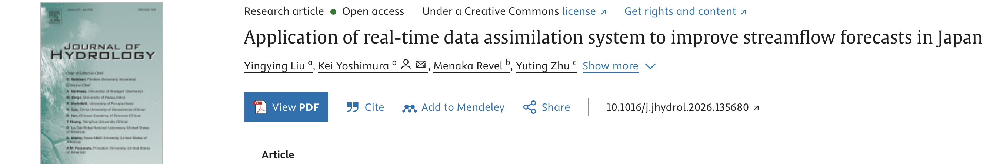
202512
Publication论文論文
Publish SAR-derived flooding areas co-author paper on Journal of Hydrology
合著SAR洪水范围识别论文发表于《水文学报》
SAR洪水域抽出共著論文が Journal of Hydrology に掲載
Global flood extent monitoring using SAR satellite and hydrological data: A multi-scale and multi-source approach
利用SAR卫星与水文数据的全球洪水范围监测：多尺度、多源方法
SAR衛星と水文データを用いたグローバル洪水域モニタリング：マルチスケール・マルチソースアプローチ
Accurate flood extent detection remains challenging due to diverse land cover characteristics and the limited temporal resolution of remote sensing data. This paper proposes a probabilistic framework that integrates multi-frequency Synthetic Aperture Radar (SAR) data, land use and land cover (LULC) information, historical water occurrence records, and hydrological model outputs to enhance flood mapping accuracy. Specifically, the method combines SAR observations acquired at X-band (TerraSAR-X), C-band (Sentinel-1, GF-3), and L-band (ALOS-2) with spatially resolved prior information derived from Global Surface Water (GSW) occurrence data and hydrological predictions from the Today's Earth (TE) system. To validate the framework, we tested it across multiple SAR frequency bands, applied it to diverse flood events in Japan, Bangladesh, the USA and China. Validation results showed that the proposed method surpassed the advanced U-Net deep learning model. Specifically, the method achieved overall accuracy above 0.87, highlighting its reliability across diverse regions and acquisition conditions. Furthermore, the proposed probabilistic framework integrates multitemporal SAR observations with open-access hydrological priors, enabling stable and interpretable flood prediction without reliance on large labeled datasets or high computational resources. This makes the method particularly suitable for real-time deployment in data-scarce or infrastructure-limited regions. Overall, the results demonstrate the method's practical potential for global and long-term flood monitoring, offering a scalable and sensor-agnostic solution for operational disaster response and risk management systems.
由于土地覆盖多样性和遥感数据时间分辨率有限，精确洪水范围检测仍面临挑战。本文提出融合多频SAR数据（X、C、L波段）、土地利用/覆盖信息、历史水体记录和水文模型输出的概率框架，在日本、孟加拉国、美国和中国的洪水事件中，精度超过0.87，优于U-Net深度学习模型。该框架无需大量标注数据，适合在数据匮乏地区实时部署，为全球洪水监测和应急响应提供了可扩展方案。
多様な土地被覆特性とリモートセンシングデータの時間分解能の制約から、正確な洪水域検出は依然困難です。本研究は多周波SAR（X・C・Lバンド）、土地被覆情報、歴史的水体記録、水文モデル出力を統合した確率論的フレームワークを提案。日本・バングラデシュ・米国・中国で精度0.87以上を達成し、U-Net深層学習モデルを上回りました。大規模ラベルデータ不要で、データ不足地域でのリアルタイム展開に適しています。
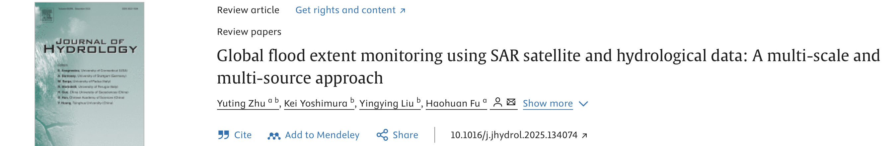
202512
Conference学术会议学会
Oral presentation in AGU 2025 @ New Orleans
在AGU 2025年会（新奥尔良）作口头报告
AGU 2025年次大会（ニューオーリンズ）にて口頭発表
In the oral talk, I introduce the developed real-time online data assimilation system and its performance in Japan. And also I answer following three questions:
• Can DA enhance streamflow forecasts? How much can it improve?
• Can DA contribute to improving flood forecasts through a more accurate streamflow forecast?
• How long can the improved impact persist in forecasts?
口头报告中，我介绍了所开发的实时在线数据同化系统及其在日本的表现，并回答了以下三个问题：
• DA能否提升径流预报？能改善多少？
• DA能否通过更精准的径流预报进而改善洪水预报？
• 改善效果在预见期内能持续多久？
口頭発表では、開発したリアルタイムオンラインデータ同化システムとその日本での性能を紹介し、以下の3つの問いに答えました：
• DAは流量予測を改善できるか？どの程度改善するか？
• DAはより正確な流量予測を通じて洪水予測にも貢献できるか？
• 改善効果は予測においてどのくらい持続するか？
202508
Milestone里程碑マイルストーン
Join Critical Infrastructure Systems Lab @ Cornell University for my PhD study!
加入康奈尔大学关键基础设施系统实验室，开启博士研究！
コーネル大学 Critical Infrastructure Systems Lab にてPhD研究を開始！
202508
Milestone里程碑マイルストーン
Graduate from Yoshimura Lab @ the University of Tokyo!
从东京大学芳村研究室毕业！
東京大学 芳村研究室を卒業！
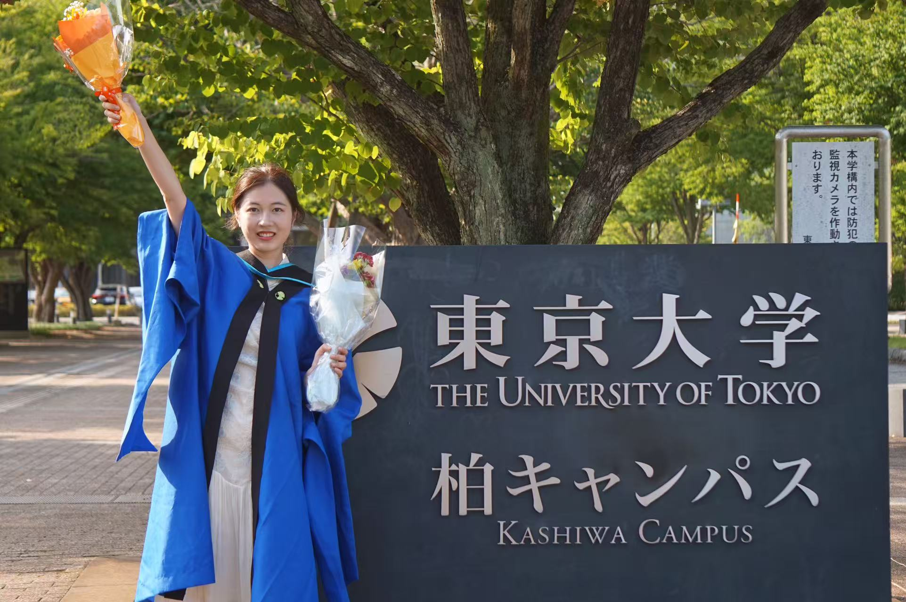
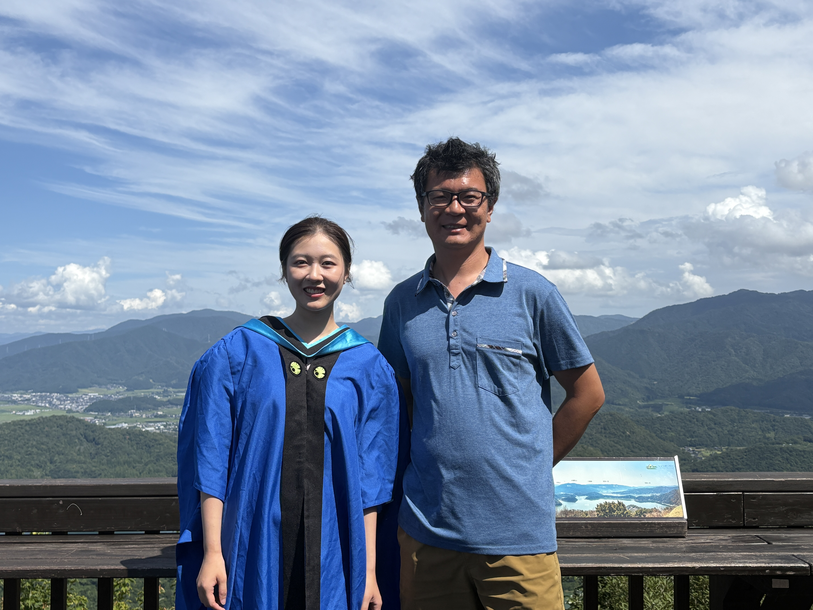
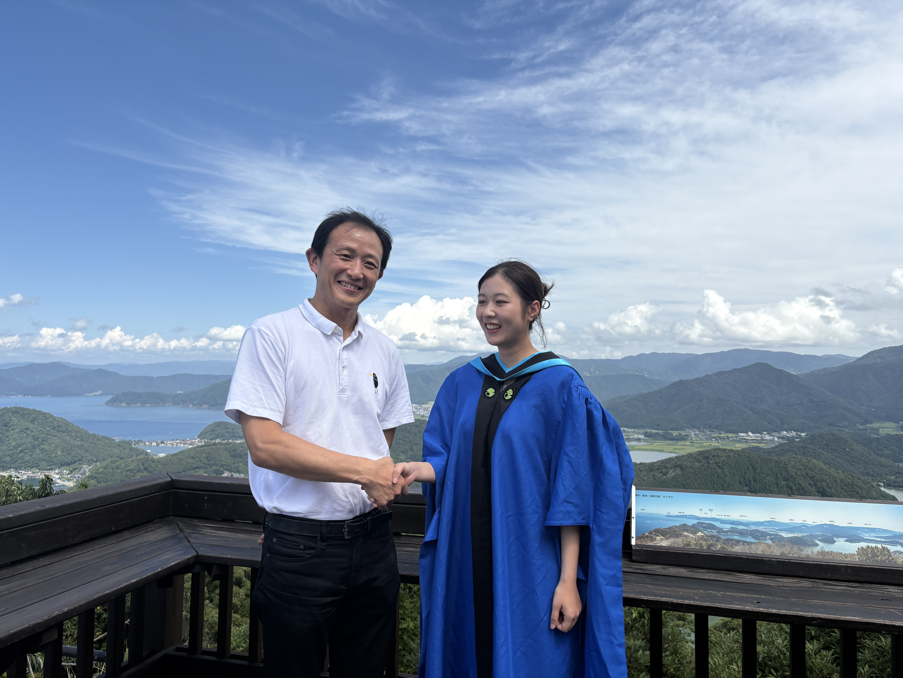
202505
Grant资助グラント
Receive funding support from UTEC Young Researchers Challenge Support Funding to be a visiting student in Cornell University!
获得UTEC若手海外自由展開・研鑽支援プログラム资助，赴康奈尔大学访学！
UTECの若手海外自由展開・研鑽支援プログラムに採択され、コーネル大学への訪問研究を実施！
202503
Invited Talk特邀报告招待講演
Invited talk for JAXA Today's Earth project @ Kyushu University
受邀在九州大学作JAXA Today's Earth项目学术报告
九州大学にてJAXA Today's Earth プロジェクトへの招待講演
Given an invited talk about the development of a data assimilation system for hydrological model MATSIRO + CaMa-Flood, and its future potential to be applied in JAXA flood forecast product Today's Earth.
就MATSIRO+CaMa-Flood水文模型数据同化系统的开发及其在JAXA洪水预报产品Today's Earth中的潜在应用作特邀报告。
MATSIRO＋CaMa-Floodモデルへのデータ同化システム開発と、JAXAの洪水予測プロダクト「Today's Earth」への応用可能性について招待講演を行いました。
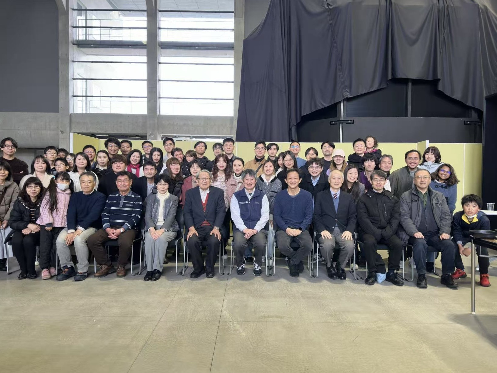
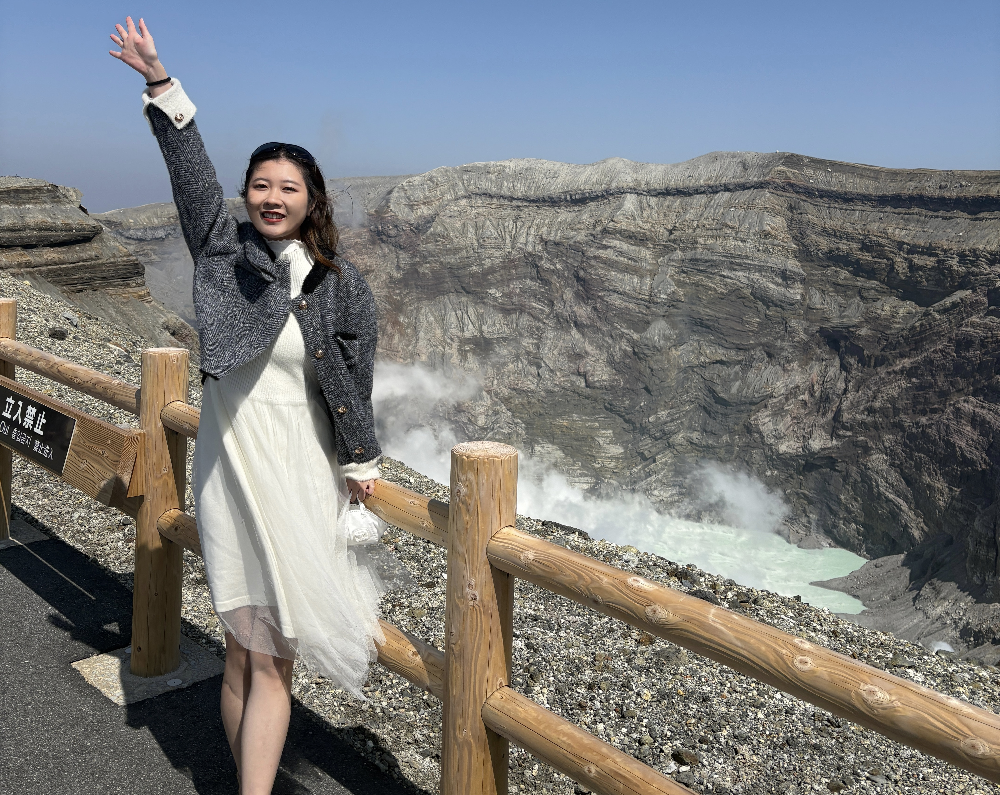
202412
Conference学术会议学会
Two poster presentations in AGU 2024 @ Washington DC
在AGU 2024年会（华盛顿特区）作两篇墙报展示
AGU 2024年次大会（ワシントンD.C.）にてポスター発表2件
One poster is about Evaluate the performance of SWOT measurement in small rivers. The Surface Water and Ocean Topography (SWOT) mission provides an unparalleled ability to measure global surface water resources. In this study we provide a comparison between the high-resolution (HR) SWOT products and in-situ gauges for a range of surface water systems in Japan.
Another poster is about Enhancing Data Assimilation Performance in Hydrological Models Through More Effective Ensemble Simulations: A Case Study during Typhoon Hagibis in Japan. In this study, we design various ensemble spreads to explore sources of model uncertainty and identify more effective ensemble simulations to enhance DA. We focus on the period of Typhoon Hagibis in Japan. To simulate streamflow during this event, we use meteorological data to drive the Minimal Advanced Treatments of Surface Interaction and Runoff (MATSIRO) land surface model (LSM), which generates runoff for the Catchment-based Macro-scale Floodplain Model (CaMa-Flood). Key sources of model errors include uncertainties in rainfall, hydrological parameters within the LSM, and hydraulic parameters in CaMa-Flood. To evaluate these uncertainties, we conduct six experiments to generate 20 ensembles for each experiment.
墙报一：评估SWOT卫星在小河流测量中的表现。SWOT任务提供了无与伦比的全球地表水资源测量能力。本研究将高分辨率SWOT产品与日本多种地表水系统的实测数据进行比较分析。
墙报二：通过更有效的集合模拟增强水文模型中的数据同化性能——以台风"哈吉贝斯"为例。本研究设计了多种集合扩展方案，探索模型不确定性来源，并针对台风哈吉贝斯期间的日本场景开展了六组共120个集合成员的实验。
ポスター①：日本の中小河川におけるSWOT衛星の精度評価。SWOT高分解能プロダクトと現地観測データを比較分析しました。
ポスター②：台風ハギビス期間中の水文モデルへのデータ同化改善。MATSIRO-CaMa-Floodモデルを用い、降雨・土壌パラメータ・水理パラメータの不確実性を評価する6実験（各20アンサンブル）を実施しました。


202405
Publication论文論文
Publish heatwave modelling co-author paper on Urban Climate
合著城市热浪模拟论文发表于《城市气候》（Urban Climate）
都市ヒートウェーブモデリング共著論文が Urban Climate に掲載
Assessing daytime discrepancies and key factors in urban thermal environments: A local climate zones-based modeling study in five Chinese cities
城市热环境日间差异及关键因素评估：基于局地气候区分类的五城市模拟研究
都市熱環境の昼間格差と主要因子の評価：中国5都市における局地気候区ベースのモデリング研究
In this study, we apply the WRF model with the BEP-BEM urban scheme to simulate the thermal environment of built-up areas in five representative Chinese cities during heatwave events. By employing high-resolution urban land use/land cover data based on local climate zone (LCZ) classification, we aim to examine the heterogeneous nature of the urban thermal environment. The results indicate that air temperature is higher in compact areas (i.e., LCZ1 and LCZ2) and lower in open and sparse areas (i.e., LCZ9 and LCZ6), similar to many observational and simulation results. When temperature, humidity, and wind speed are all considered, the heat stress metric presents characteristics that are analogous to the air temperature pattern. We further analyze the factors (i.e., anthropogenic heat, thermal parameters, and geometrical parameters) that contribute to air temperature differences between LCZs and find that anthropogenic heat and geometrical parameters are the primary contributors. Anthropogenic heat accounts for nearly three fifths of the total difference, and geometrical parameters account for more than two fifths, while thermal parameters have little effect. These findings could assist municipal planners design appropriate mitigation strategies to reduce the effects of urban overheating and create a more habitable urban environment.
本研究应用耦合BEP-BEM城市方案的WRF模式，模拟中国五座代表性城市热浪期间建成区的热环境。结果表明，紧凑区域（LCZ1、LCZ2）气温较高，开放稀疏区域（LCZ9、LCZ6）气温较低。进一步分析发现，人为热排放与几何参数是不同局地气候区气温差异的主要贡献因子，分别占总差异的近3/5和超过2/5，热力参数影响较小。这些发现可为城市规划者制定缓解城市过热的适应策略提供参考。
BEP-BEM都市スキームを組み込んだWRFモデルで中国5都市のヒートウェーブ時の熱環境を解析しました。LCZ分類に基づく高解像度データを使用。LCZ1・2の密集地域で気温が高く、LCZ9・6の開放地域で低いことを確認。人為的発熱と都市幾何パラメータがLCZ間の気温差の主要因（各約3/5・2/5）であることを明らかにしました。
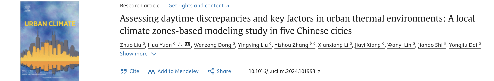
202404
Award获奖受賞
Receive Best Presentation Award of Hydrosphere Science Project @ University of Tokyo
荣获东京大学水圈科学项目最佳演讲奖
東京大学 水圏科学プロジェクト 最優秀発表賞を受賞
202310
Milestone里程碑マイルストーン
Join Yoshimura Lab @ the University of Tokyo for my master study!
加入东京大学芳村研究室，开启硕士研究！
東京大学 芳村研究室に入学し、修士研究を開始！
Join natural environmental studies, GSFS department in the University of Tokyo and supervised by Dr. Kei Yoshimura for my master study.
加入东京大学新领域创成科学研究科自然环境学专攻，在芳村圭教授的指导下开展硕士研究。
東京大学大学院新領域創成科学研究科自然環境学専攻に入学し、芳村圭教授のご指導のもと修士研究を開始しました。
202310
Award获奖受賞
Receive the Third-Class National Prize from "Challenge Cup" Chinese College Student Entrepreneurship Plan Competition
荣获"挑战杯"中国大学生创业计划竞赛全国三等奖
「挑戦杯」中国大学生起業計画コンペ 全国三等賞を受賞
202306
Milestone里程碑マイルストーン
Graduate from Land Surface Process Model Development Lab @ Sun Yat-sen University!
从中山大学陆面过程模式开发实验室毕业！
中山大学 陸面過程モデル開発研究室を卒業！
Received my bachelor's degree from Atmospheric Science department, Sun Yat-sen University thanks for the supervision from Hua Yuan (Associate Professor at Atmospheric Science). And my bachelor thesis paper "Land Use and Land Cover Change Significantly Shifted Local Water Availability Globally over the past Three Decades" has been awarded as the Excellent Bachelor Thesis in Sun Yat-sen University (5/130).
在中山大学大气科学系袁华副教授的指导下，获得大气科学学士学位。毕业论文《过去三十年土地利用/覆盖变化对全球局地水资源可用性的显著影响》荣获中山大学优秀毕业论文奖（130篇第5名）。
中山大学大気科学系の袁華准教授のご指導のもと学士号を取得。卒業論文「過去30年間の土地利用・土地被覆変化が世界の局地的水利用可能量に与えた影響」が優秀卒業論文賞（130編中5位）を受賞しました。
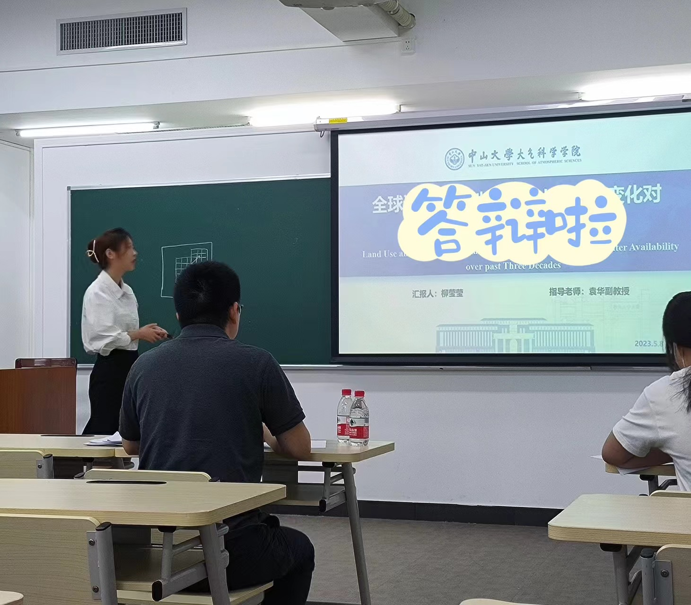
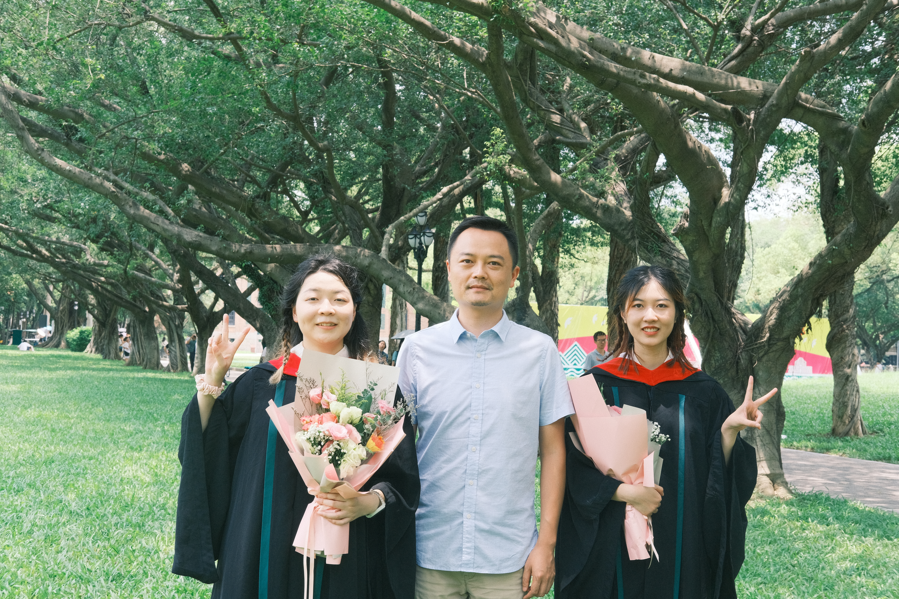
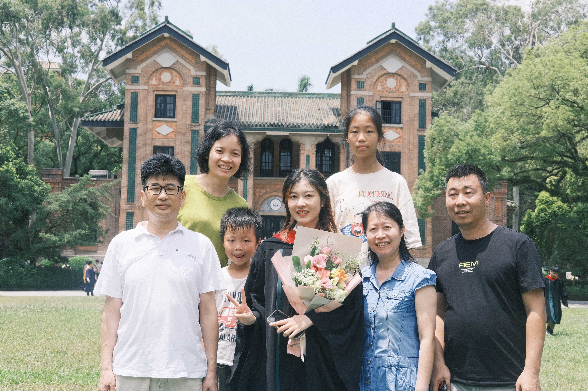
202304
Award获奖受賞
Receive the Golden Prize from "Challenge Cup" Competition @ Guangdong Province!
荣获"挑战杯"广东省金奖！
「挑戦杯」広東省大会 金賞受賞！
Among more than 170,000 students and 2129 projects, we got the top prize (1/17000)!
在逾17万名学生、2129个项目的角逐中，我们团队荣获最高奖（17000个项目中第1名）！
17万人以上の学生・2,129プロジェクトの中から、最高賞（17,000プロジェクト中1位）を獲得！
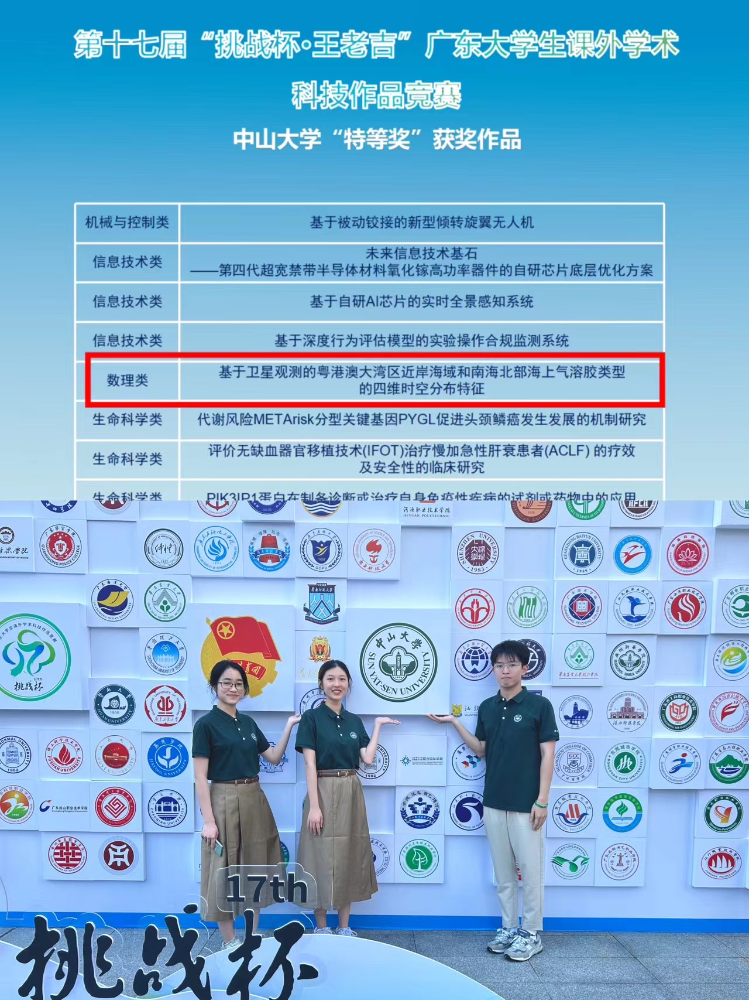
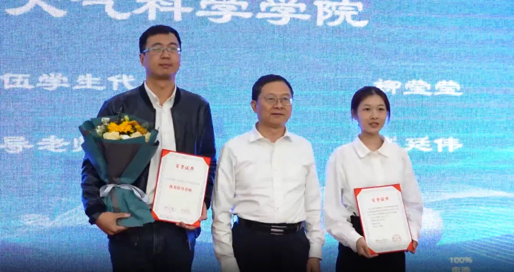
202210
Award获奖受賞
Receive National Scholarship Award (top 0.02% students in China)!
荣获国家奖学金（全国前0.02%学生）！
国家奨学金受賞（中国全学生の上位0.02%）！
This is the highest-level national scholarship for all Chinese students!
这是面向全体中国学生的最高级别国家奖学金！
中国全学生を対象とした最高レベルの国家奨学金です！
202210
Publication论文論文
Publish satellite-observed pollutant paper on Remote Sensing
卫星观测污染物研究论文发表于《遥感》（Remote Sensing）
衛星観測汚染物質研究論文が Remote Sensing に掲載
Satellite-Observed Four-Dimensional Spatiotemporal Characteristics of Maritime Aerosol Types over the Coastal Waters of the Guangdong–Hong Kong–Macao Greater Bay Area and the Northern South China Sea
粤港澳大湾区及南海北部沿海水域卫星观测气溶胶类型四维时空特征
粤港澳大湾区および南シナ海北部沿海の衛星観測エアロゾルタイプの四次元時空間特性
Based on long-term satellite lidar profiles from 2006 to 2020, we analyzed the four-dimensional (x-y-z-t) spatiotemporal characteristics of different aerosol types over the coastal waters of the Guangdong–Hong Kong–Macao Greater Bay Area (GBA). We revealed that the terrestrial aerosol influence tended to decrease in the study areas. The insight into aerosol types and its variation will facilitate the understanding of the aerosol climate effects and pollutant control in the coastal waters of the GBA and the NSCS.
基于2006—2020年长期卫星激光雷达廓线数据，分析了粤港澳大湾区（GBA）沿海水域不同气溶胶类型的四维（x-y-z-t）时空特征。研究揭示陆地气溶胶影响呈减弱趋势，这对于理解GBA及南海北部的气溶胶气候效应和污染物控制具有重要意义。
2006〜2020年の長期衛星ライダーデータを用いて、粤港澳大湾区（GBA）沿海の異なるエアロゾルタイプの四次元（x-y-z-t）時空間特性を解析しました。陸源エアロゾルの影響が減少傾向にあることを明らかにし、GBAおよび南シナ海北部の気候効果と汚染物質制御の理解に貢献しています。
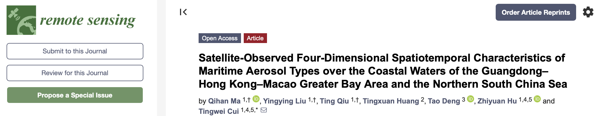